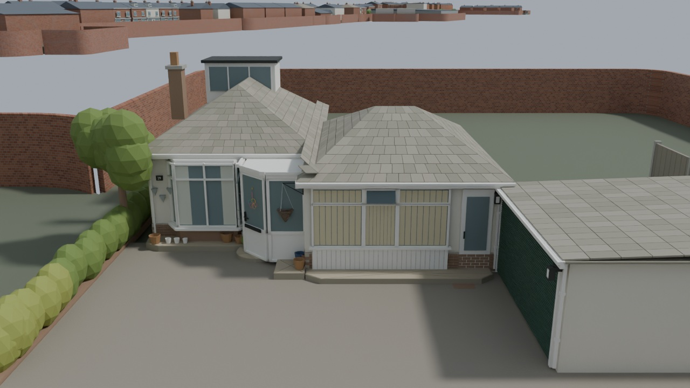

11 October 2026 · Textured daylight views of the saved Blender model: your house, Holmdale Road and the connected street extension.
These show the detailed Blender source. The Radiant conversion has lost visual fidelity and is set aside. Architecture and dimensions retain the documented survey estimates; concealed building depths and the Barkby joining bend remain approximate. No model geometry was changed for these renders.
Route notes and earlier matched views · Editable Blender file
